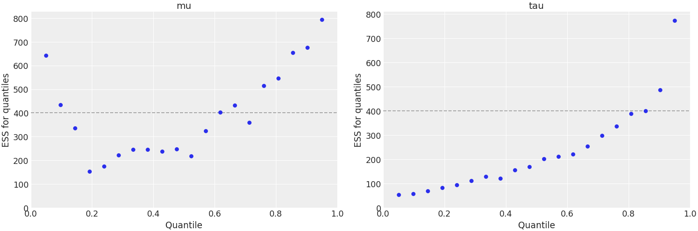

arviz.plot_ess¶
-
arviz.plot_ess(idata, var_names=None, filter_vars=None, kind='local', relative=False, coords=None, figsize=None, textsize=None, rug=False, rug_kind='diverging', n_points=20, extra_methods=False, min_ess=400, ax=None, extra_kwargs=None, text_kwargs=None, hline_kwargs=None, rug_kwargs=None, backend=None, backend_kwargs=None, show=None, **kwargs)[source]¶ Plot quantile, local or evolution of effective sample sizes (ESS).
- Parameters
- idata: obj
Any object that can be converted to an az.InferenceData object Refer to documentation of az.convert_to_dataset for details
- var_names: list of variable names, optional
Variables to be plotted. Prefix the variables by ~ when you want to exclude them from the plot.
- filter_vars: {None, “like”, “regex”}, optional, default=None
If None (default), interpret var_names as the real variables names. If “like”, interpret var_names as substrings of the real variables names. If “regex”, interpret var_names as regular expressions on the real variables names. A la pandas.filter.
- kind: str, optional
Options:
local,quantileorevolution, specify the kind of plot.- relative: bool
Show relative ess in plot
ress = ess / N.- coords: dict, optional
Coordinates of var_names to be plotted. Passed to Dataset.sel
- figsize: tuple, optional
Figure size. If None it will be defined automatically.
- textsize: float, optional
Text size scaling factor for labels, titles and lines. If None it will be autoscaled based on figsize.
- rug: bool
Plot rug plot of values diverging or that reached the max tree depth.
- rug_kind: bool
Variable in sample stats to use as rug mask. Must be a boolean variable.
- n_points: int
Number of points for which to plot their quantile/local ess or number of subsets in the evolution plot.
- extra_methods: bool, optional
Plot mean and sd ESS as horizontal lines. Not taken into account in evolution kind
- min_ess: int
Minimum number of ESS desired.
- ax: numpy array-like of matplotlib axes or bokeh figures, optional
A 2D array of locations into which to plot the densities. If not supplied, Arviz will create its own array of plot areas (and return it).
- extra_kwargs: dict, optional
If evolution plot, extra_kwargs is used to plot ess tail and differentiate it from ess bulk. Otherwise, passed to extra methods lines.
- text_kwargs: dict, optional
Only taken into account when
extra_methods=True. kwargs passed to ax.annotate for extra methods lines labels. It accepts the additional keyxto setxy=(text_kwargs["x"], mcse)- hline_kwargs: dict, optional
kwargs passed to ax.axhline for the horizontal minimum ESS line.
- rug_kwargs: dict
kwargs passed to rug plot.
- backend: str, optional
Select plotting backend {“matplotlib”,”bokeh”}. Default “matplotlib”.
- backend_kwargs: bool, optional
These are kwargs specific to the backend being used. For additional documentation check the plotting method of the backend.
- show: bool, optional
Call backend show function.
- **kwargs
Passed as-is to plt.hist() or plt.plot() function depending on the value of kind.
- Returns
- axes: matplotlib axes or bokeh figures
References
Vehtari et al. (2019) see https://arxiv.org/abs/1903.08008
Examples
Plot local ESS. This plot, together with the quantile ESS plot, is recommended to check that there are enough samples for all the explored regions of parameter space. Checking local and quantile ESS is particularly relevant when working with HDI intervals as opposed to ESS bulk, which is relevant for point estimates.
>>> import arviz as az >>> idata = az.load_arviz_data("centered_eight") >>> coords = {"school": ["Choate", "Lawrenceville"]} >>> az.plot_ess( ... idata, kind="local", var_names=["mu", "theta"], coords=coords ... )

Plot quantile ESS and exclude variables with partial naming
>>> az.plot_ess( ... idata, kind="quantile", var_names=['~thet'], filter_vars="like", coords=coords ... )
Plot ESS evolution as the number of samples increase. When the model is converging properly, both lines in this plot should be roughly linear.
>>> az.plot_ess( ... idata, kind="evolution", var_names=["mu", "theta"], coords=coords ... )

Customize local ESS plot to look like reference paper.
>>> az.plot_ess( ... idata, kind="local", var_names=["mu"], drawstyle="steps-mid", color="k", ... linestyle="-", marker=None, rug=True, rug_kwargs={"color": "r"} ... )

Customize ESS evolution plot to look like reference paper.
>>> extra_kwargs = {"color": "lightsteelblue"} >>> az.plot_ess( ... idata, kind="evolution", var_names=["mu"], ... color="royalblue", extra_kwargs=extra_kwargs ... )